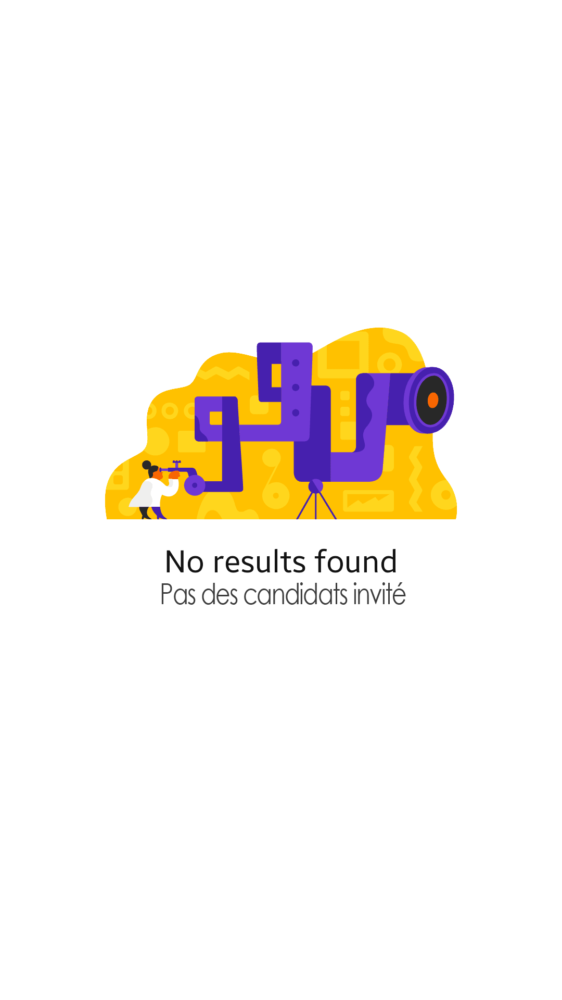

<!--
  Generated template for the CvAnonymesPage page.

  See http://ionicframework.com/docs/components/#navigation for more info on
  Ionic pages and navigation.
-->
<ion-header>

  <ion-navbar color="secondary">
    <ion-title>Listes des Candidats</ion-title>
  </ion-navbar>

</ion-header>


<ion-content padding >
    <div *ngIf="noresult">
      
    </div>
    <ion-list *ngIf="!noresult">
        <ion-item-sliding *ngFor="let invitation of invitations">
            <ion-item>
              <ion-avatar item-start>
                  <ion-icon class="profile" name="ios-contact"></ion-icon>
              </ion-avatar>
              <h2>{{ invitation.id.candidat.nom }} {{ invitation.id.candidat.prenom }}</h2>
              <p>{{ invitation.id.candidat.username }} • {{ invitation.id.candidat.type }}</p>
            </ion-item>
            <!-- <ion-item-options side="left">
              <button ion-button color="primary">
                <ion-icon name="text"></ion-icon>
                Text
              </button>
              <button ion-button color="secondary">
                <ion-icon name="call"></ion-icon>
                Call
              </button>
            </ion-item-options> -->
            <ion-item-options side="right">
              <button ion-button (click)="openCv(invitation.id.candidat)" color="secondary">
                <ion-icon name="eye"></ion-icon>
                Cv
              </button>
              <button ion-button (click)="openInvitation(invitation.id.candidat,invitation.id.offre.id)" color="primary">
                <ion-icon name="mail"></ion-icon>
                Email
              </button>
            </ion-item-options>
          </ion-item-sliding>
    </ion-list>
</ion-content>
